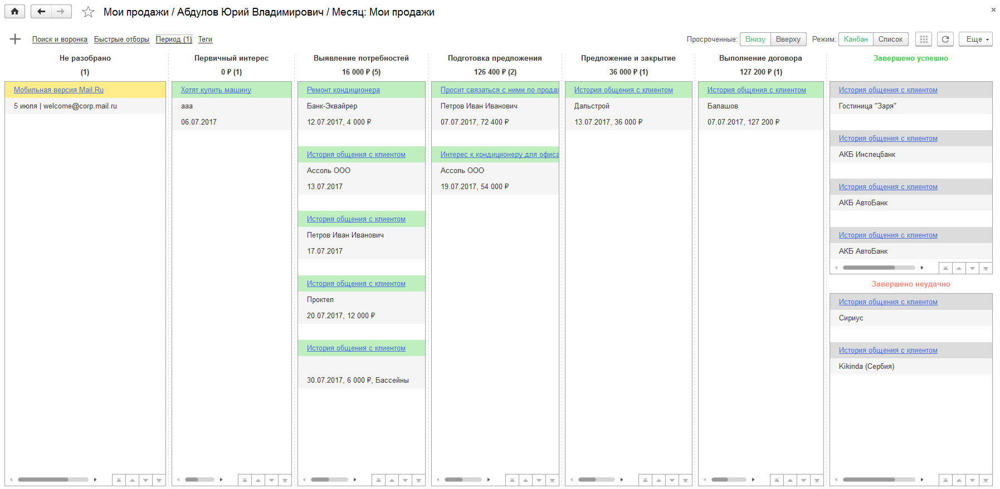
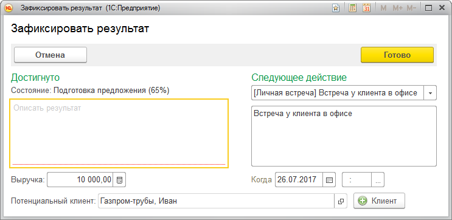
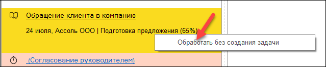
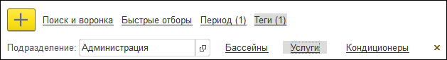
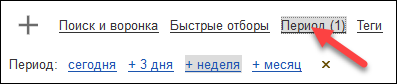
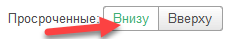

Автоматизированное рабочее место Мои продажи
АРМ Мои продажи реализовано в виде канбан-доски. Слово «канбан» переводится с японского как «рекламный щит, вывеска». Оно пришло с завода Toyota, где так называют систему организации производства. Мастера производственных участков завода Toyota перечисляли выполняемые работы на бумаге и вывешивали их на специальном щите.
Похожие инструменты используются для управления проектами и процессами. АРМ Мои продажи предназначен для управления процессом продажи (работа с интересами клиентов). АРМ позволяет увидеть, сколько интересов клиентов (сделок) сейчас в работе и на каких этапах они находятся. Какие действия по ним запланированы на сегодня, а какие из них уже просрочены.
Работа с интересами клиентов в АРМ Мои продажи
В АРМ отображаются интересы клиентов, за которые отвечает сотрудник. Кроме интересов в АРМ так же выводятся входящие обращения клиентов. Работа с обращениями описана в следующей главе Диспетчеризация входящих обращений клиентов.
Рабочая область АРМ состоит из колонок Не разобрано, Завершено успешно, Завершено неудачно, а также колонок, соответствующих этапам работы с интересами клиентов.

АРМ Мои продажи
В каждой колонке (кроме первой колонки Не разобрано) отображаются карточки с описанием интереса клиента и датой запланированного взаимодействия по нему.
Карточка интереса клиента
В окне интереса клиента есть пиктограмма . Она используется для того, чтобы выделить какой-либо интерес клиента для обработки в первую очередь. При нажатии на пиктограмму она поменяет цвет на зеленый, а интерес клиента выделится в АРМ Мои продажи жирным шрифтом.
Выделение интереса клиента в АРМ Мои продажи
Для визуального контроля карточки клиентов выделяются цветом.
· Зеленый цвет - все запланированные в интересе клиента взаимодействия с клиентами не являются просроченными.
· Желтый цвет - есть просроченное взаимодействие с клиентами, а интерес клиента находится НЕ на этапе Первичный интерес.
· Красный цвет - есть просроченное взаимодействие с клиентом и сам интерес клиента находится на этапе Первичный интерес.
Целью работы в АРМ Мои продажи является последовательный перенос интересов клиентов из колонки в колонку (перенос интереса клиента выполняется при переходе на новый этап работы с клиентом). В итоге интерес клиента должен быть перемещен в колонки Завершено успешно или Завершено неудачно.
При переносе интереса клиента на новый этап будет открыто окно, в котором нужно указать результат текущего запланированного взаимодействия. Для каждого интереса клиента, работа с которым не закончена, всегда должно быть запланировано хотя бы одно взаимодействие с клиентом. Поэтому при переводе интереса клиента на следующий этап работ, требуется вносить данные по запланированному взаимодействию.

Фиксация результата и планирование следующего действия
Для завершения работы с интересом клиента его карточка переносится в колонки Завершено успешно или Завершено неудачно. В обоих случаях будет открыто окно для ввода результата последнего взаимодействия с клиентом.
Диспетчеризация входящих обращений клиентов
Цель работы с входящими обращениями в колонке Не разобрано - выделить среди них и зарегистрировать в программе интерес клиента к продуктам и услугам. Все входящие обращения должны быть обработаны.
В колонку Не разобрано попадают следующие обращения клиентов:
· Входящие электронные письма, пришедшие на почтовые ящики, за которые отвечает сотрудник.
· Телефонные звонки за которые отвечает сотрудник (при использовании модуля СофтФон).
Причем в АРМ попадают только письма и телефонные звонки, которые не были автоматически связаны с существующими интересами клиентов.
Если для обращения не нужно регистрировать интерес клиента или привязывать обращение к уже существующему интересу клиента, тогда обращение скрывается из АРМ с помощью команды Обработать без создания задачи (команда применима к нескольким выделенным обращениям).

Обработка обращения без создания интереса клиента
Регистрация интереса клиента или установка связи обращения с уже зарегистрированным интересом клиента выполняется с помощью мастера принятия обращения. Чтобы открыть мастер достаточно перенести карточку обращения в любую колонку.
Важно!
В колонку Не разобрано не попадают электронные письма, помещенные ранее в папку Обработанные (при работе в почтовом клиенте).
Фильтрация и сортировка интересов клиентов в АРМ Мои продажи
В АРМ отображаются те интересы клиентов, за которые отвечает сотрудник. Руководитель подразделения также может просматривать интересы клиентов, закрепленные за его подчиненными (настройка соответствующих прав доступа описана в документе Механизм доступа к данным других пользователей).
Отображаемые в АРМ интересы клиентов можно дополнительно отфильтровать по
· клиенту и типу услуги;
· тегам, примененным к интересам клиентов.

Панель фильтрации и поиска
Глубина просмотра взаимодействий
В АРМ Мои продажи отражаются интересы клиентов, по которым последнее взаимодействие просрочено или запланировано на текущий день. При необходимости можно задать период просмотра запланированных взаимодействий. Можно отображать интересы клиентов, по которым запланированы взаимодействия на ближайшие 3 дня, неделю или месяц.

Период просмотра взаимодействий
Сортировка интересов клиентов
Интересы клиентов сортируются по дате последнего взаимодействия. Вверху оказываются более ранние взаимодействия, а снизу более поздние.
Если просроченных взаимодействий более 6, тогда запланированные взаимодействия уже не будут помещаться в видимой области АРМ. В таком случае для быстрого просмотра запланированных взаимодействий можно включить режим отображения просроченных взаимодействий Внизу . Тогда запланированные взаимодействия всегда будут отображаться сверху.
Отображение АРМ в виде списка
При большом количестве интересов клиентов осуществлять просмотр удобнее в виде списка. Для этого нужно переключить режим отображения, нажав на кнопку Список. В данном режиме отображаются по хронологии все интересы клиентов, кроме завершенных.
Анализ интересов клиентов с помощью воронки продаж
Для анализа интересов клиентов используется отчет Воронка продаж. Отчет можно открыть с помощью команды в подменю Еще → Анализ. Работа с отчетом описана в документе Управление интересами клиентов, их прогнозирование.